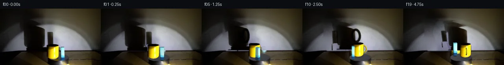

![首帧]()

Round 00
2026-11-05T04:50:27.098103+00:00像素候选变化代码 +371/−0inspection 更新
pixels bce53e11432cfec6 · code eff4a600556a411a
查看本轮 generate.py 真实 diff
--- previous/generate.py
+++ current/generate.py
@@ -0,0 +1,371 @@
+"""Local measured-pixel continuation; no pretrained models or external renderer."""
+from pathlib import Path
+import json, math
+import numpy as np
+import cv2
+from PIL import Image, ImageDraw
+from scipy.interpolate import RBFInterpolator
+from scipy.ndimage import gaussian_filter
+from artifact_io import save
+
+ROOT = Path(__file__).resolve().parent
+TMP = ROOT / '.tmp'
+TMP.mkdir(exist_ok=True)
+W, H, SS = 256, 144, 3
+source = np.array(Image.open(ROOT / 'first_frame.png').convert('RGB'), dtype=np.uint8)
+I = source.astype(np.float32)
+YY, XX = np.mgrid[:H, :W]
+CX, CY, K = 146.7, 124.4, .32
+MUG = np.array([-12.2, -5.0])
+BLOCK = np.array([12.1, -17.7])
+
+
+def polygon_mask(points, blur=0.0):
+ p = np.array(points, np.float32)
+ hi = np.zeros((H * SS, W * SS), np.uint8)
+ cv2.fillPoly(hi, [np.round(p * SS).astype(np.int32)], 255)
+ a = cv2.resize(hi.astype(np.float32) / 255, (W,H), interpolation=cv2.INTER_AREA)
+ return gaussian_filter(a, blur) if blur else a
+
+
+# Measured silhouette of the actual photographic mug, including its black lip.
+mug_outline = [(125,90.9),(140,90.9),(145.2,91.9),(148.1,93.1),
+ (149.3,95.2),(149.3,114),(149.0,119),(148.0,122),
+ (146.3,124.8),(143.0,127.1),(138.4,128.7),(131.6,129.1),
+ (126.5,128.1),(123.3,126.4),(121.3,124.5),(120.8,98),
+ (119.9,94.7),(120.4,92.9),(122.2,91.8)]
+mug_alpha = polygon_mask(mug_outline, .18)
+block_alpha = polygon_mask([(153.8,98),(163.5,97.7),(164.4,132),
+ (153.3,132),(153.6,105)], .15)
+object_mask = np.maximum(mug_alpha, block_alpha)
+
+# Remove the two original wall shadows. Preserve the measured light field everywhere else.
+shadow_region = polygon_mask([(45,24),(78,23),(112,38),(120,55),
+ (120,99),(119,108),(62,108),(55,88),(52,53)],1.2)
+block_region = polygon_mask([(117.7,55.4),(134.8,56.7),(141.2,98),
+ (140.0,108),(117.5,108)],.7)
+wall_objects = object_mask * (YY < 109)
+missing_wall = np.maximum.reduce([shadow_region,block_region,wall_objects])
+# Thin-plate interpolation of RGB irradiance from only unoccluded pixels of this input.
+known = (missing_wall < .002) & (YY < 108)
+samples = known & (XX % 4 == 0) & (YY % 4 == 0)
+pos = np.column_stack([XX[samples]/100., YY[samples]/100.])
+val = I[samples]
+rbf = RBFInterpolator(pos, val, kernel='thin_plate_spline', smoothing=.018, neighbors=90)
+pred = rbf(np.column_stack([XX.ravel()/100.,YY.ravel()/100.])).reshape(H,W,3)
+pred = np.clip(pred, 0, 255).astype(np.float32)
+B = I.copy()
+B += missing_wall[...,None]*(pred-B) * (YY < 109)[...,None]
+# Split the calibrated transmittance fields at the valley between silhouettes.
+split = np.clip((119.4-XX)/2.,0,1)
+wall_matte = np.clip((B-I)/np.maximum(B,1),0,1)
+wall_matte *= (YY < 109)[...,None]
+wall_matte *= (1-wall_objects)[...,None]
+shadow_mug = wall_matte * split[...,None]
+shadow_block = wall_matte * (1-split)[...,None]
+# Retain colored ambient light inside the photographed shadow, including its penumbra.
+
+# Clean the small original footprints on the table and turntable with local interpolation.
+floor_erase = ((object_mask > .025) & (YY >= 108)).astype(np.uint8)*255
+floor_erase = cv2.dilate(floor_erase,np.ones((3,3),np.uint8))
+floor_fill = cv2.inpaint(source,floor_erase,7,cv2.INPAINT_TELEA).astype(np.float32)
+B = np.where((floor_erase>0)[...,None],floor_fill,B)
+# The circular upper surface is stationary in outline. Restore hidden parts using its
+# measured neutral-gray gradient, while retaining all unobstructed photographed pixels.
+disk = np.clip((1-((XX-CX)/28.)**2-((YY-CY)/10.)**2)*20,0,1)
+disk_color = np.stack([66-.16*(XX-147)-.25*(YY-120),
+ 67-.17*(XX-147)-.24*(YY-120),
+ 71-.19*(XX-147)-.23*(YY-120)],axis=2)
+replace_disk = disk*(floor_erase>0)
+B = B*(1-replace_disk[...,None])+disk_color*replace_disk[...,None]
+# Restore the neutral disk under the photographed cast shadow immediately below the mug.
+contact_clean = polygon_mask([(121,122),(140,125),(153,127),(153,133),
+ (121,133)],.5)*disk
+B = B*(1-contact_clean[...,None])+disk_color*contact_clean[...,None]
+# Erase small colored reflections in the swept upper surface only.
+reflection_clean = polygon_mask([(134,127),(165,127),(165,133),(133,133)],.7)*disk
+B = B*(1-reflection_clean[...,None])+disk_color*reflection_clean[...,None]
… diff truncated; 284 more lines …